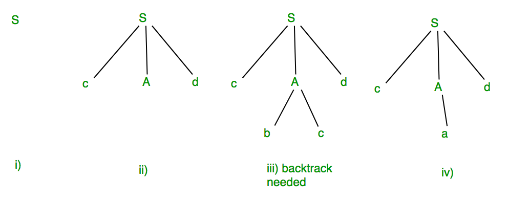

When an input string (source code or a program in some language) is given to a compiler, the compiler processes it in several phases, starting from lexical analysis (scans the input and divides it into tokens) to target code generation.
Syntax Analysis or Parsing is the second phase, i.e. after lexical analysis. It checks the syntactical structure of the given input, i.e. whether the given input is in the correct syntax (of the language in which the input has been written) or not. It does so by building a data structure, called a Parse tree or Syntax tree. The parse tree is constructed by using the pre-defined Grammar of the language and the input string. If the given input string can be produced with the help of the syntax tree (in the derivation process), the input string is found to be in the correct syntax.
The Grammar for a Language consists of Production rules.
Example:
Suppose Production rules for the Grammar of a language are:
S -> cAd A -> bc|a And the input string is “cad”.
Now the parser attempts to construct syntax tree from this grammar for the given input string. It uses the given production rules and applies those as needed to generate the string. To generate string “cad” it uses the rules as shown in the given diagram:

{kind=link}
In the step iii above, the production rule A->bc was not a suitable one to apply (because the string produced is “cbcd” not “cad”), here the parser needs to backtrack, and apply the next production rule available with A which is shown in the step iv, and the string “cad” is produced.
Thus, the given input can be produced by the given grammar, therefore the input is correct in syntax.
But back-track was needed to get the correct syntax tree, which is really a complex process to implement.
There can be an easier way to solve this, which we shall see in the next article “Concepts of FIRST and FOLLOW sets in Compiler Design”.